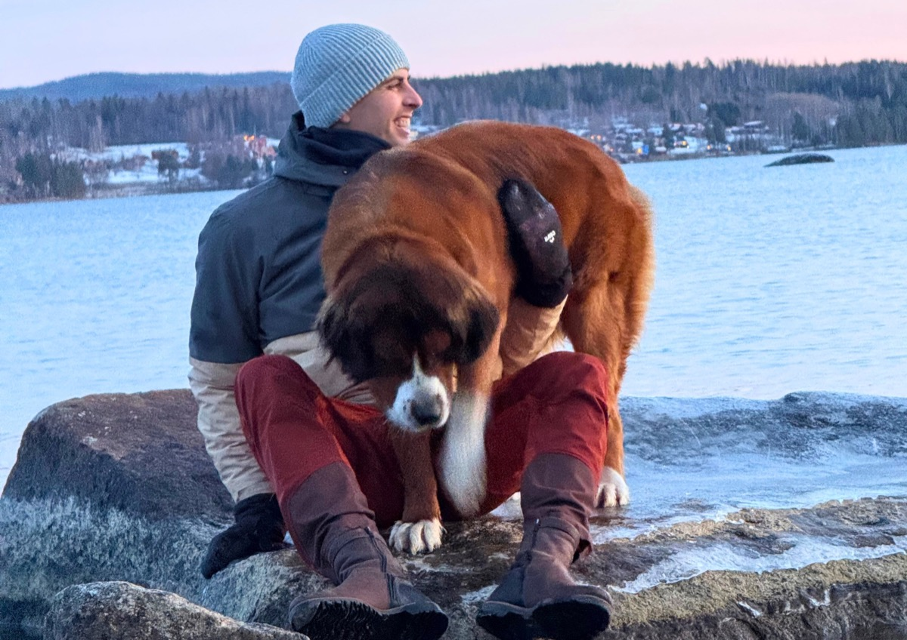
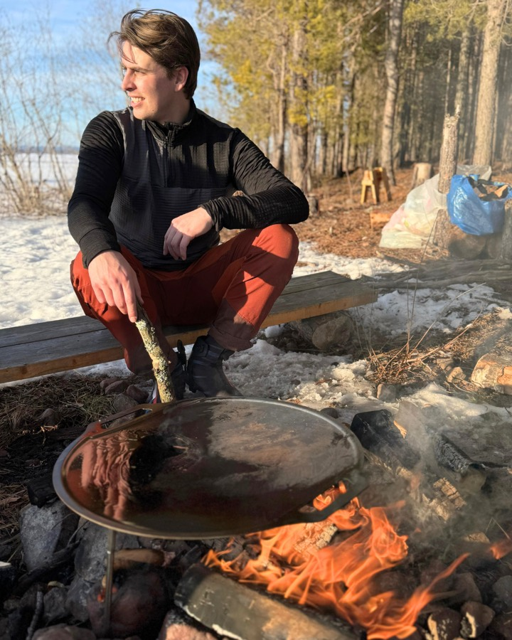
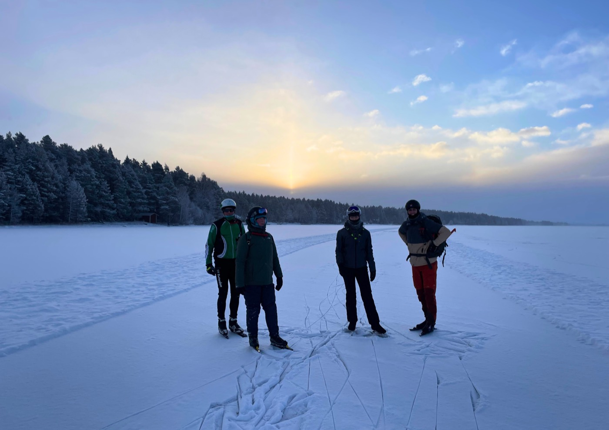

Draußen sein, in der Natur, darum geht es mir. Schlittschuhlaufen auf Natureis gibt ein unvergleichliches Gefühl von Freiheit.
Es ist keine kontrollierte Eisbahn, sondern etwas, das du lesen, verstehen und respektieren musst. Jeder Tag auf Natureis ist anders — der Wind, das Licht, die Bedingungen. Vor allem diese sonnigen, windstillen Tage sind magisch. Das möchte ich Menschen erleben lassen, denn in unserer Gesellschaft stehen wir dabei zu wenig still.
Mein Hintergrund liegt im Schlittschuhlaufen. Ich laufe schon von Kindesbeinen an Schlittschuh und habe im Laufe der Jahre viel Erfahrung auf Natureis gesammelt. Später habe ich eine Ausbildung zum Sportlehrer absolviert und danach viel Erfahrung im 11shop der Elfstedenhal gesammelt, wo ich mich mit Schlittschuhmaterial und Schleifen beschäftigt habe. Doch letztlich geht es mir nicht um Leistung — es geht darum, das Schlittschuhlaufen und die Natur zu erleben.